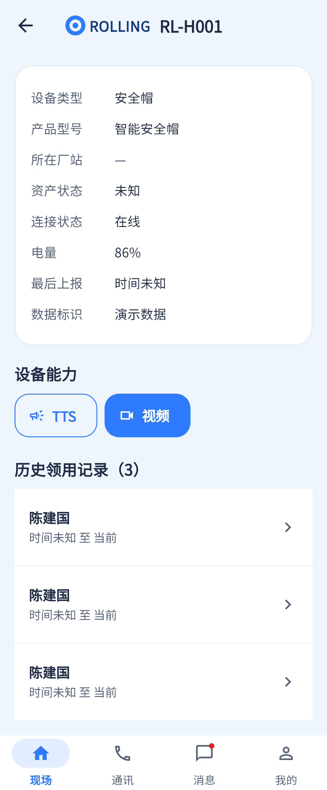

详情查询已接请求，当前领用摘要和视觉层级待补；不能因示例未展示对讲就认定代码没有对讲。
相同 · 已有基础
设备类型、型号、厂站、资产状态、连接、电量、最后上报、按能力展示通信入口、历史领用均已有。
不同 · UI与场景
当前无设备大图和当前领用人独立卡，标题为SN；通信为文字按钮，历史直接展开。
01 / 先看 UI
两图显示宽度统一；设计390px与当前360逻辑宽的画布不同。各图可独立滚动到底，点击“原图”放大。


使用既有组件截图；业务数据为示例。
02 / 逐项核对功能与小交互
入口：设备台账 → 设备；人员详情 → 装备 · 当前形态：子页面
| 编号 | 部位 | 设计要求 | 当前UI | 功能结论 | 下一步 |
|---|---|---|---|---|---|
| 11-01 | 顶部 | 设备详情标题与工厂头图 | 当前SN作标题、无插画 | 已有展示 | 加入设备详情语义并保留SN |
| 11-02 | 设备摘要 | 设备大图、名称、SN、在线徽标 | 当前只有字段卡 | 部分：基础数据存在，摘要图卡未做 | 按型号/类型配图，未知类型给占位 |
| 11-03 | 字段 | 类型/型号/厂站/电量/最后上报/资产状态 | 均已渲染 | 已有代码：devices/:id | 真实字段缺失显示未知；设计值不作数据真值 |
| 11-04 | 能力 | 语音播报、对讲、视频彩色入口 | 当前TTS、对讲、视频按钮按actions生成 | 已有代码：capabilities.actions；不是按设备品类硬开 | 统一“TTS”为语音播报，缺能力时不显示假可用按钮 |
| 11-05 | 能力可用性 | 支持情况与服务状态 | 当前详情主要按capability显示 | 部分：具体权限/会话在通讯页判定 | 补禁用原因，不能在离线设备上保证成功 |
| 11-06 | 当前领用人 | 独立卡含姓名、领用时间、箭头 | currentAssignment用来传通讯人员，未独立展示该卡 | 部分：数据已利用，UI缺口 | 补当前领用摘要，空绑定显示未领用 |
| 11-07 | 历史记录 | 历史入口 | 当前完整历史列表 | 已有代码：devices/:id/assignments，点人员详情 | 可改折叠/独立内容容器；保留时间起止 |
| 11-08 | 刷新异常 | 加载失败重试 | 当前已有 | 已有代码：QueryStateView和下拉刷新 | 按40统一样式 |
源码依据
queries/devices.dart:277,314,382,422；queries/query_utils.dart:104
链接为随报告保存的带行号快照；行号对应分析时源码。以函数和字段共同定位，不能将请求代码视为执行成功证据。